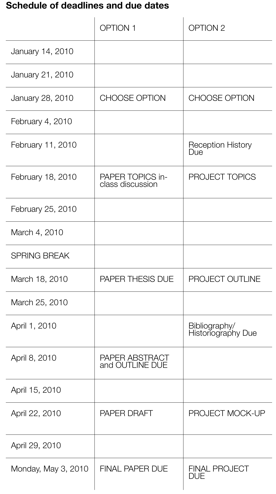
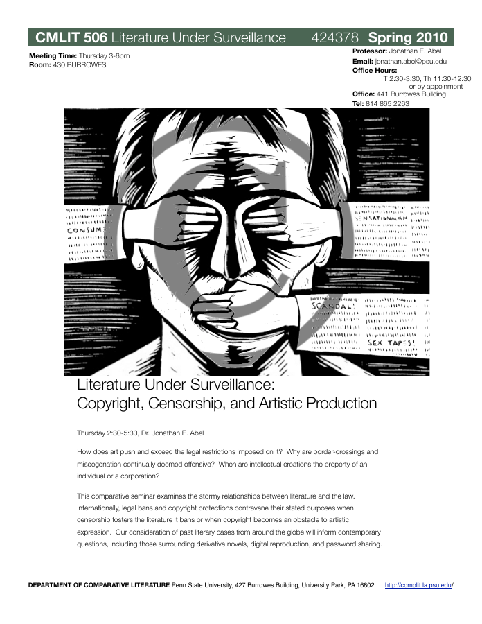

Requirements
SPRING 2010
CMLT506 Requirements

GRADE BREAKDOWN
Option 1
20% Preparedness, participation
10% 15 Minute Presentation
10% 15 Minute Presentation
10% 2 Summary and 3 Response Posts
10% Preliminary Paper Work
(Thesis, Outline, Abstract, Oral Presentation)
50% 20-25 page Final Paper
Option 2
20% Preparedness and participation
10% 15 Minute Presentation
10% 3 Summary and Response Posts
5% 4-5 page book Reception History
15% 4-5 page Bibliographic/Historiographic Review of the Field
20% Oral presentation of final Project
20% Final Project
Course Requirements
Preparedness and participation
Seminar participants are expected to prepare themselves each week by reading, taking notes, and coming to an understanding of the texts. A prepared participant will bring to seminar meetings both their own interpretation and questions about the texts. Participants are expected to have a working knowledge of the historical circumstances of the banning of the primary texts assigned. This will require some cursory research on the banning prior to the seminar meeting. If participants have prepared in this manner, your expected active participation in seminar discussions will be a matter of course. Participants in the seminar are expected to actively participate.
Presentations
Participants will deliver at least one 15-minute presentation during the semester. Presentations should focus on at least one of the assigned texts for that week. An effective presentation develops an interpretation of a text within its historical and/or critical contexts. On the day of your presentation, you will also be responsible for monitoring the progress of class discussion, raising questions and helping to address questions under discussion.
Note that each of you will also serve once as a respondent to the main presentation. Your response should last no longer than five minutes.
Email me and your respondent your presentation outline by 5pm on the Wednesday preceding the Thursday class meeting.
2 Summary and 3 Response Posts
Participants will post 500-word summaries during the semester to the Angel website. Students should select readings from the list relevant to their on-going studies. Please post summaries by Wednesday evening prior to the meeting for which they are assigned.A successful summary presents the text’s entire argument or plot, following its key turns. You may be revisiting these texts in the future for your oral examinations, dissertation, teaching, and book projects. Think of these summaries as part of your permanent archive to which you can return to refresh your recollection of each text.
Participants will respond to three posts of their choice over the course of the semester.
Final Paper due May 3, 2010
OPTION ONE ONLY
A final research paper of 20-25 pages, produced on a topic agreed in consultation with me, is due on May 3. Please turn in a one-page abstract of your paper by April 8.
Please consult MLA Handbook for Writers of Research Papers for style and formatting guidelines.
We will conduct a mini-conference during the final class session, in which you will give a ten-minute talk (in the form of a conference paper) based on your final essay. This is an occasion for you to practice presenting the public face of your work in progress.
5 page Book Reception History Due Feb. 11, 2010
OPTION TWO ONLY
Participants will choose a book from a literary tradition of their choice that encountered legal restrictions and write a brief reception and publication history of the book. This should include ostensible reasons for the encounter, descriptions of the positions taken by the primary actors in the disputes, and a brief reflection on the role of the contents of the literature in the encounter.
4-5 page Review of the Field Due Apr. 1, 2010
OPTION TWO ONLY
Participants will write a 4-5 page overview of secondary material in their field of literary interest relating to the topic of the seminar. For instance, historiographic and bibliographic surveys of recent monographs and articles on literary censorship in Fascist Italy, on international copyright in North Africa, or on the role of internet as means of circulation and control of literary production in China.
You may be revisiting these texts in the future for your oral examinations, dissertation, teaching, and book projects. Think of eiew as part of your permanent archive to which you can return to refresh your recollection of each text.
Final Project due May 3, 2010
OPTION TWO ONLY
Participants may propose a final project that relates to their field of interest and the interests defined in the seminar. The scope, media. and topic of the project will be decided with my consultation and approval.
Examples of worthwhile projects might include creating an online database of books banned in your area of interest, creating a webpage resource for banned authors and those trying to read their work, or pooling recent precedents on the potential conflicts between teaching literature and copyright.
OPTION 3 — Auditors
Requirements for auditors
Ideally auditors would come to each session after having familiarized themselves with the readings. In this ideal, at minimum, auditors would attend as many seminar sessions as possible. However, it is understood that these ideals are not always possible in reality. Therefore, auditors should try as much as possible to meet those ideals, but they will not be penalized if they are unable to do so.
Auditors should also let me know if they’d be interested in presenting.

